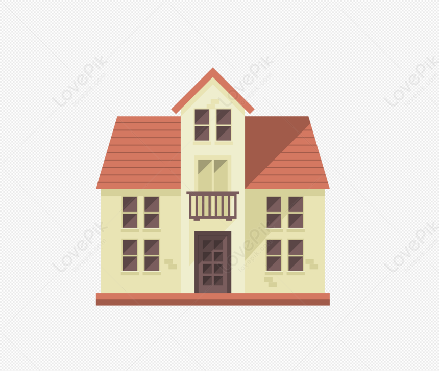

<main role="main" class="container">
  <header class="row">
    <div class="col-5 donationcard bg-light">
      <div class="container-fluid mx-4 padear mt-4">
        <header>
          <Form>
            <label class="form-label" for="buscar">Buscar</label>
            <div class="input-group mb-3">
              <input
                type="text"
                class="form-control"
                placeholder="Buscar"
                aria-describedby="button-addon2"
                id="buscar"
              />
              <button class="btn btn-primary" type="button" id="button-addon2">
                Buscar
              </button>
            </div>
          </Form>
          <h3>Centros de donacion</h3>
        </header>
        <div class="list-group">
          <a
            (click)="irMarcador(centro.marker!)"
            class="list-group-item list-group-item-action container-fluid"
            *ngFor="let centro of centros"
          >
            <div class="row mt-3">
              <div class="col-1">
                
              </div>
              <div class="col-11">
                <h5>{{ centro.nombre }}</h5>
                <p>{{ centro.descripcion }}</p>
              </div>
            </div>
          </a>
        </div>
      </div>
    </div>
    <div class="col-7">
      <div #mapa class="mapa-container"></div>
      <div class="fila">
        <label class="form-label"
          >Zoom: {{ zoomLevel | number: "2.2-2" }}
        </label>
        <input
          type="range"
          class="form-range"
          [value]="zoomLevel"
          min="1"
          max="18"
          (input)="zoomCambio(zoomInput.value)"
          #zoomInput
        />
        <button class="btn btn-primary" (click)="zoomOut()">-</button>
        <button class="btn btn-primary float-end" (click)="zoomIn()">+</button>
      </div>
    </div>
  </header>
</main>
